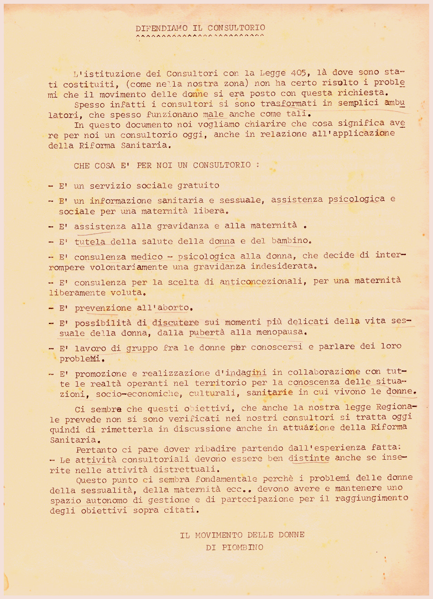
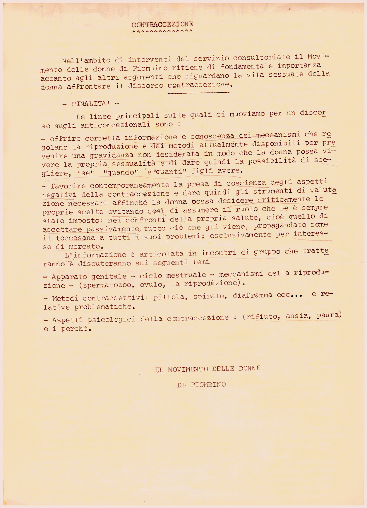
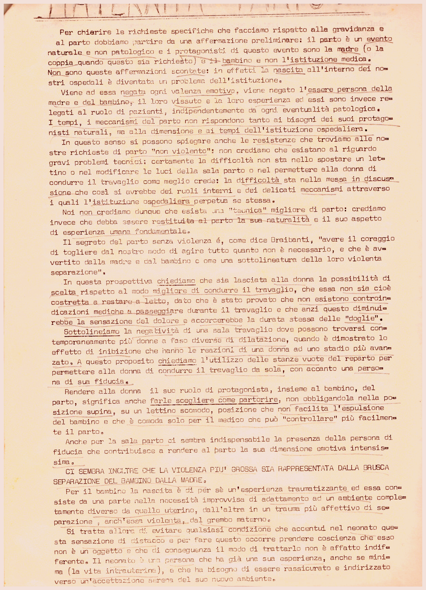
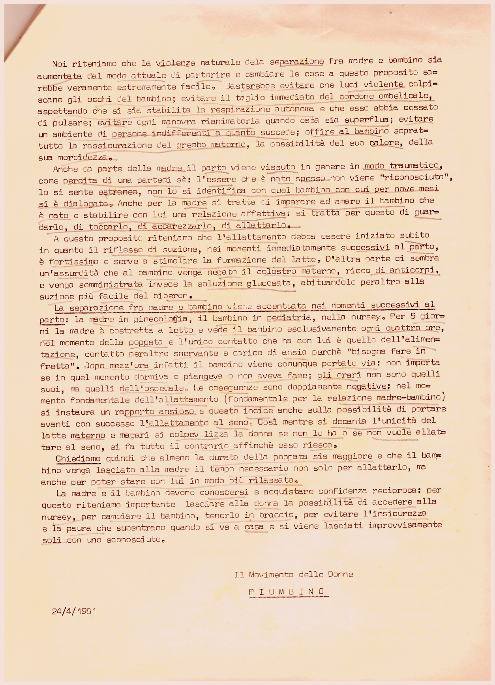
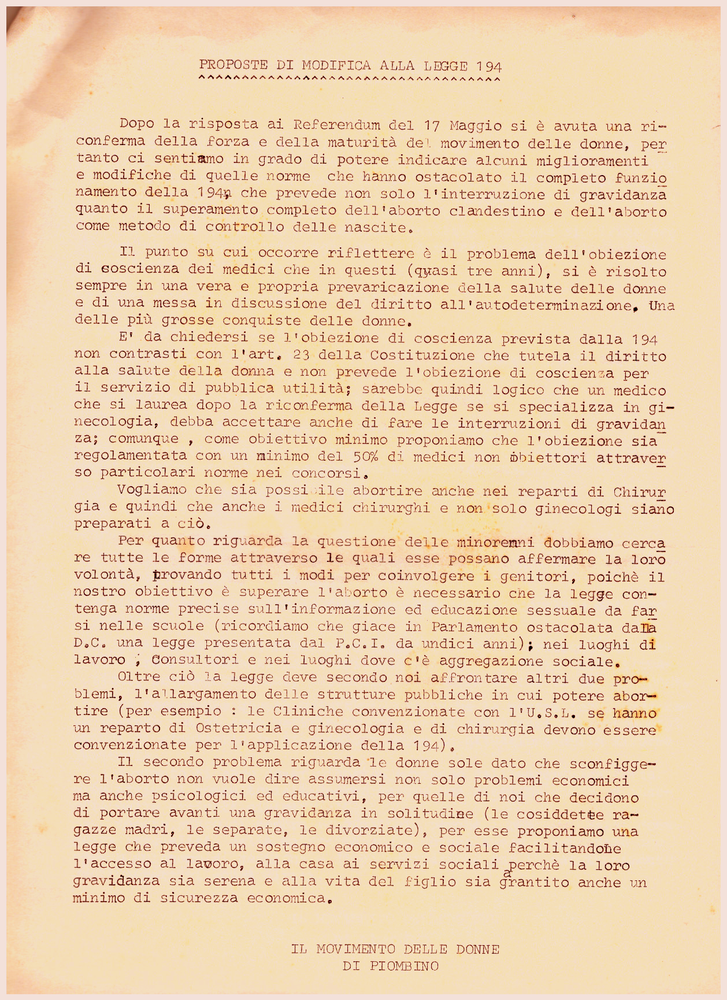

Difendiamo il consultorio
L'istituzione dei consultori con la legge 405, là dove sono stati costituiti, come nella nostra zona non ha certo risolto i problemi che il movimento delle donne si era
posto con questa richiesta.
Spesso infatti i consultori si sono trasformati in semplici ambulatori, che spesso funzionano male come tali.
In questo documento noi vogliamo chiarire che cosa significa avere per noi un consultorio oggi, anche in relazione all'applicazione
della riforma sanitaria.
Ci sembra che questi obiettivi, che anche la nostra legge regionale prevede non si sono verificati nei nostri consultori si
tratta oggi quindi devi metterla in discussione anche in attuazione della riforma sanitaria.
Pertanto ci pare dover ribadire partendo dall'esperienza fatta: le attività consulto reali devono essere ben distinte anche
se inserite nelle attività distrettuali.
Questo punto ci sembra fondamentale perché i problemi delle donne della sessualità, della maternità eccetera... Devono avere
e mantenere uno spazio autonomo di gestione e di partecipazione per il raggiungimento degli obiettivi sopraccitati.
Il movimento delle donne di Piombino

Contraccezione
Nell'ambito di interventi del servizio consultoriale il Movimento delle donne di Piombino ritiene di fondamentale importanza accanto agli altri argomenti che riguardano la vita sessuale della donna affrontare il
discorso contraccezione.
Finalità
Il Movimento delle donne di Piombino

Maternita' parto
Per chiarire le richieste specifiche che facciamo rispetto alla gravidanza e al parto dobbiamo partire da un'affermazione
preliminare: il parto è un evento naturale e non patologico e i protagonisti di questo evento sono la madre o della coppia
quando questo sia richiesto il bambino e non l'istituzione medica.
Non sono queste affermazioni scontate: in effetti la nascita all'interno dei nostri ospedali è diventata un problema dell'istituzione.
Viene ad essere negata ogni valenza emotiva, viene negato l'essere persona della madre e del bambino, il vissuto nella loro
esperienza ed essi sono invece relegati al ruolo di pazienti, indipendentemente da ogni eventualità patologica.
I tempi, i meccanismi del parto non rispondono tanto ai bisogni dei suoi protagonisti naturali, ma la dimensione ai tempi
dell'istituzione ospedaliera.
In questo senso si possono spiegare anche le resistenze che troviamo alle nostre richieste di parto "non violento": non crediamo
che esistano al riguardo gravi problemi tecnici: certamente la difficoltà non sta nello spostare un lettino o nel modificare
le luci della sala parto o nel permettere alla donna di condurre il travaglio come meglio crede: la difficoltà sta nella messa
in discussione che così si avrebbe nel ruoli interni dei delicati meccanismi attraverso i quali l'istituzione ospedaliera
perpetua a se stessa.
Noi non crediamo comunque che esista una tecnica migliore di parto: crediamo invece che debba essere restituita al parto alla
sua naturalità e il suo aspetto di esperienza umana fondamentale.
Il segreto del parto senza violenza, come dice Braibanti, avere il coraggio di togliere dal nostro modo di agire tutto quanto non è necessario, e che è avvertito dalla madre e dal
bambino come una sottolineatura della loro violenta separazione.
In questa prospettiva chiediamo che sia lasciata alla donna la possibilità di scelta rispetto al modo migliore di condurre il travaglio, che essa non sia
cioè costretta a restare al letto, dato che è stato provato che non esistono controindicazioni mediche a passeggiare durante
il travaglio e che anzi questo diminuirebbe la sensazione del dolore e accorcerebbe la durata stessa delle doglie.
Sottolineiamo la negatività di una sala travaglio come possono trovarsi contemporaneamente più donne a faso diverse di dilatazione, quando
è dimostrato lo effetto di inibizione che hanno le reazioni di una donna ad uno stato più avanzato.
A questo proposito chiediamo l'utilizzo delle stanze vuote del reparto per permettere alla donna di condurre il travaglio
da sola, con accanto una persona di fiducia.
Nella donna il suo ruolo di protagonista, insieme al bambino, del parto, significa anche farle scegliere come partorire, non obbligandola nella posizione supina, su un lettino scomodo, posizione che non facilita l'esposizione del bambino e che
accomoda solo per il medico che può controllare più facilmente il bambino.
Anche per la sala parto ci sembra indispensabile la presenza della persona di fiducia che contribuisce a rendere al parto
la sua dimensione emotiva intensissima.
Ci sembra inoltre che la violenza più grossa sia rappresentata dalla brusca separazione del bambino dalla madre.
Per il bambino alla nascita è di per sé un'esperienza traumatizzante ed essa consiste da una parte nella nascita improvvisa
di adattamento ad un ambiente completamente diverso da quello uterino, dall'altra in un trauma più affettivo di separazione,
anch'essa violenta, dal grembo materno.
Si tratta allora di evitare qualsiasi condizione è che centri allenato questa sensazione di distacco e per far questo occorre
prendere coscienza che esso non è un oggetto e che di conseguenza il modo di trattarlo non è affatto indifferente. Il neonato
è una persona che ha già una sua esperienza, anche se minima la vita intrauterina, e che ha bisogno di essere rassicurato
e indirizzato verso un'accettazione serena del suo nuovo ambiente.

Noi riteniamo che la violenza naturale dela separazione tra madre bambino sia aumentata dal modo attuale di partorire e cambiare
le cose a questo proposito sarebbe veramente estremamente facile. Basterebbe evitare che le luci violente colpiscano agli
occhi del bambino; evitare il taglio immediato del cordone ombelicale, aspettando che si sia stabilita la respirazione autonoma
e che esso abbia cessato di pulsare; evitare ogni manovra rianimatoria quando essa sia superflua; evitare un ambiente di persone
indifferenti a quanto succede; offrire al bambino soprattutto la rassicurazione del grembo materno, la possibilità del suo
calore, della sua morbidezza.
Anche da parte della madre il parto viene vissuto in genere in modo traumatico, come perdita di una parte di sé: essere che
è nato spesso non viene riconosciuto, lo si sente estraneo, non si identifica con quel bambino con cui per nove mesi si è
dialogato. Anche per la madre si tratta di imparare ad amare il bambino che è nato e stabilire con lui una relazione affettiva:
si tratta per questo di guardarlo, di toccarlo, di accarezzarlo, di allattarlo.
A questo proposito riteniamo che l'allattamento debba essere iniziato subito in quanto il riflesso di suzione, nei momenti
immediatamente successivi al parto, è fortissimo e serve a stimolare la formazione del latte. D'altra parte si sembra un'assurdità
che al bambino venga negato il colostro materno, ricco di anticorpi, e venga somministrata invece la soluzione glucosata,
abituandolo peraltro alla suzione più facile del biberon.
La separazione fra madre bambino viene accentuata nei momenti successivi al parto: la madre in ginecologia, il bambino in pediatria, nella nursery. Per cinque giorni la madre è costretta a letto e vede il bambino esclusivamente ogni quattro ore, nel momento della poppata
e l'unico contatto che ha con lui è quello dell'alimentazione, contatto peraltro snervante e carico di ansia perché bisogna
fare in fretta. Dopo mezz'ora infatti il bambino viene comunque portato via: Non importa se in quel momento dormivo piangeva
o non aveva fame; gli orari non sono quelli suoi, ma quelli dell'ospedale. Le conseguenze sono doppiamente negative: nel momento
fondamentale dell'allattamento fondamentale della relazione madre bambino si instaura un rapporto ansioso e questo incide
anche sulla possibilità di portare avanti con successo l'allattamento al seno. Così mentre si decanta l'unicità del latte
materno e magari si colpevolizza la donna se non lo ha ora se non vuole allattare al seno, si fa tutto il contrario affinché
esso riesca.
Chiediamo quindi che almeno la durata della poppata sia maggiore è che il bambino venga lasciato la madre il tempo necessario non solo
per allattarlo, ma anche per poter stare con lui in modo più rilassato.
La madre e il bambino devono conoscersi e acquistare confidenza reciproca: per questo riteniamo importante lasciare alla donna
la possibilità di accedere alla nursery, per cambiare il bambino, per tenerlo in braccio, per evitare l'insicurezza e la paura
che subentrano quando si va a casa e si viene lasciati improvvisamente soli con uno sconosciuto.
Il Movimento Delle Donne
Piombino
24/4/1981

Proposte di modifica alla legge 194
Dopo la risposta ai referendum del 17 maggio si è avuta una riconferma della forza e della maturità del movimento delle donne, pertanto ci sentiamo in grado di potere
indicare alcuni miglioramenti e modificare di quelle norme che hanno ostacolato il completo funzionamento della 194, che prevede non solo all'interruzione di gravidanza quando il superamento completo dell'aborto clandestino e dell'aborto
come metodo di controllo delle nascite.
Il punto su cui occorre riflettere è il problema dell'obiezione di coscienza dei medici che in questi quasi tre anni, si è
risolto sempre in una vera e propria prevaricazione della salute delle donne e della messa in discussione il diritto dell'autodeterminazione.
Una delle più grosse conquiste delle donne.
È da chiedersi se l'obiezione di coscienza prevista dalla 194 non contrasti con l'art. 23 della costituzione che tutela il diritto alla salute della donna e non prevede l'obiezione di coscienza per il servizio di
pubblica utilità; sarebbe quindi logico che un medico che si laurea dopo la riconferma della legge che si specializza ginecologia,
debba accettare anche di fare le interruzioni di gravidanza; comunque, come obiettivo minimo proponiamo che l'obiezione sia
regolamentata con un minimo del 50% di medici non obiettori attraverso particolari norme di concorsi.
Vogliamo che sia possibile abortire anche nei reparti di chirurgia e quindi anche i medici chirurghi e non solo ginecologi
siano preparati ciò.
Per quanto riguarda la questione delle minorenni dobbiamo cercare tutte le forme attraverso le quali esse possano affermare
la loro volontà, provando tutti i modi per coinvolgere i genitori, perché l'obiettivo di superare l'aborto è necessario che
la legge contenga norme precise sull'informazione ed educazione sessuale da farsi nelle scuole ricordiamo che giace in Parlamento ostacolata dalla D.C. una legge presentata dal P.C.I. da undici anni; nei luoghi di lavoro, consultori e nei luoghi dove c'è aggregazione sociale.
Oltre a ciò la legge deve secondo noi affrontare altri due problemi, l'allargamento delle strutture pubbliche in cui potere
abortire per esempio: le cliniche convenzionate con l'U.S.L. Se hanno un reparto di ostetricia e ginecologia e di chirurgia devono essere convenzionate per l'applicazione della 194.
Il secondo problema riguarda le donne sole dato che sconfiggere l'aborto non vuole dire assumersi non solo problemi economici
ma anche psicologici e educativi, per quelle di noi che decidono di portare avanti una gravidanza in solitudine le cosiddette
ragazze madri, le separate, le divorziate, per essere proponiamo una legge che preveda un sostegno economico e sociale facilitandone
l'accesso al lavoro, alla casa ai servizi sociali perché la loro gravidanza sia serena e alla vita del figlio sia garantito
anche un minimo di sicurezza economica.
Il movimento delle donne di Piombino